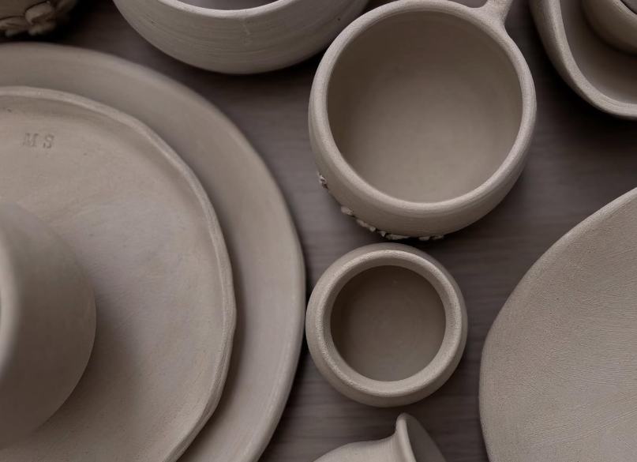
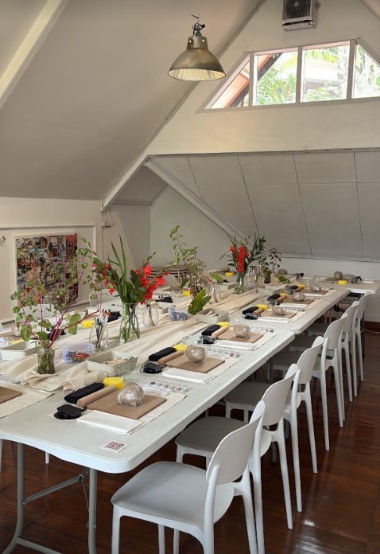

Shaped from clay,
time & stories.
Handmade ceramic with meaning.
Made with Story.
At Ai Pottery, we believe that every piece of clay holds a memory. Our studio is a sanctuary where earth meets intention. Based in Bandung, we recycle our clay and respect the process.
